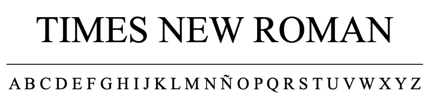
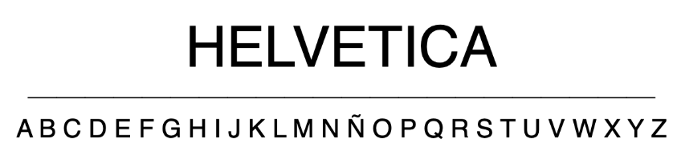
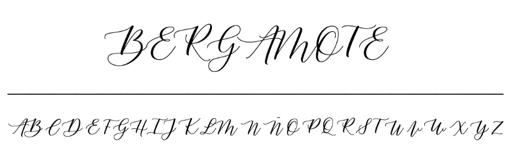
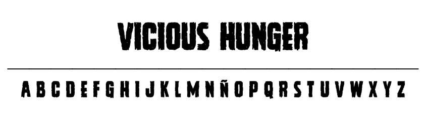

La realidad es que hay muchísimos tipos de tipografía, sobre todo, dependiendo de a quién se le pregunte, aunque sí es cierto que en general se suele hablar de cuatro categorías básicas:
Serif
Las tipografías serif o con serifa son las más clásicas y antiguas. Suelen usarse para impresión y publicaciones, ya que estas suelen tener mucho texto y la serifa permite al ojo leer más rápido. Además, son las más utilizadas en libros, periódicos y revistas, ya que dan ese toque clásico, serio o tradicional.
Sans Serif
Las tipografías Sans Serif, que literalmente significa sin serifa, a las que también llaman palo seco, son las tipografías que surgieron a partir de las vanguardias. Son las más modernas y simples. Tienden a verse más limpias, de manera que suelen usar para lectura en pantallas, ya que la Serif pueden llegar a distorsionarse en pantallas pequeñas. Las palo seco son la las tipografías más publicitarias y modernas. Muy utilizadas también en webs y en anuncios.
Script
Las tipografías script fingen la escritura a mano. Las más formales suelen imitar en las letras de escritores o se generan con la punta biselada de una pluma con trazos gruesos y finos. Hay personas que incluso hacen con tu escritura una tipografía propia con trazados imperfectos y variables. La tipografía caligráfica no tiene casi límites y es muy usada para bodas, publicidad, títulos…, pero es muy raro que se vea en cuerpos de texto.
Decorativas
Las tipografías decorativas son aquellas que tienen, como su nombre indica, una función de exhibición y su principal objetivo es llamar la atención. Suelen tener un efecto o propósito específico y no se debe abusar de ellas.
